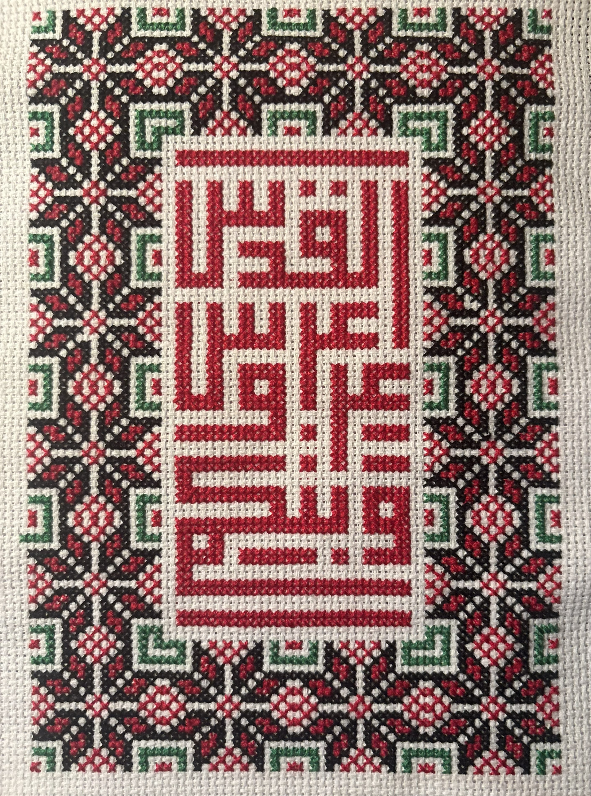
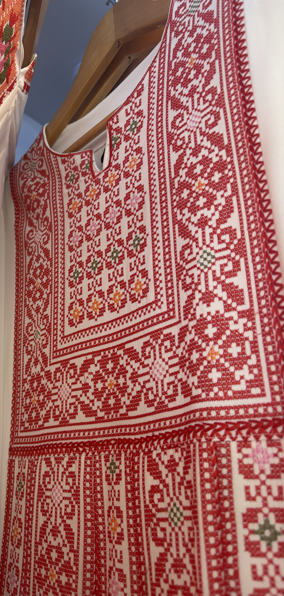
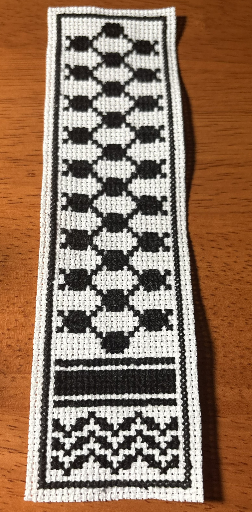
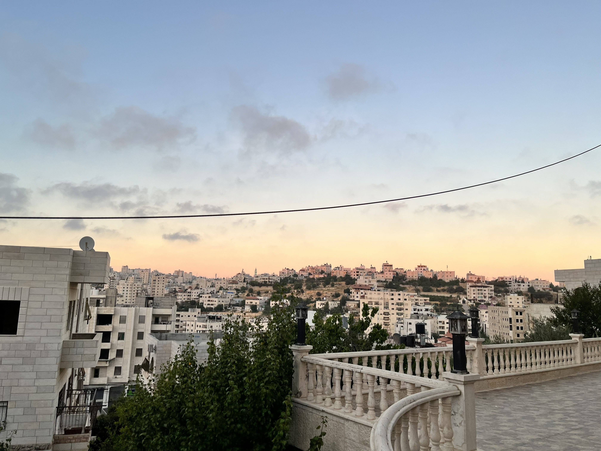
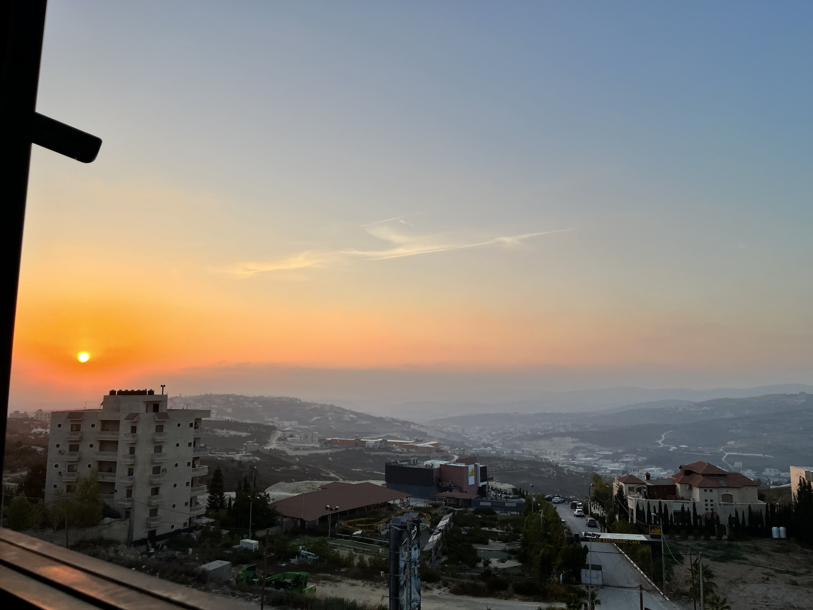
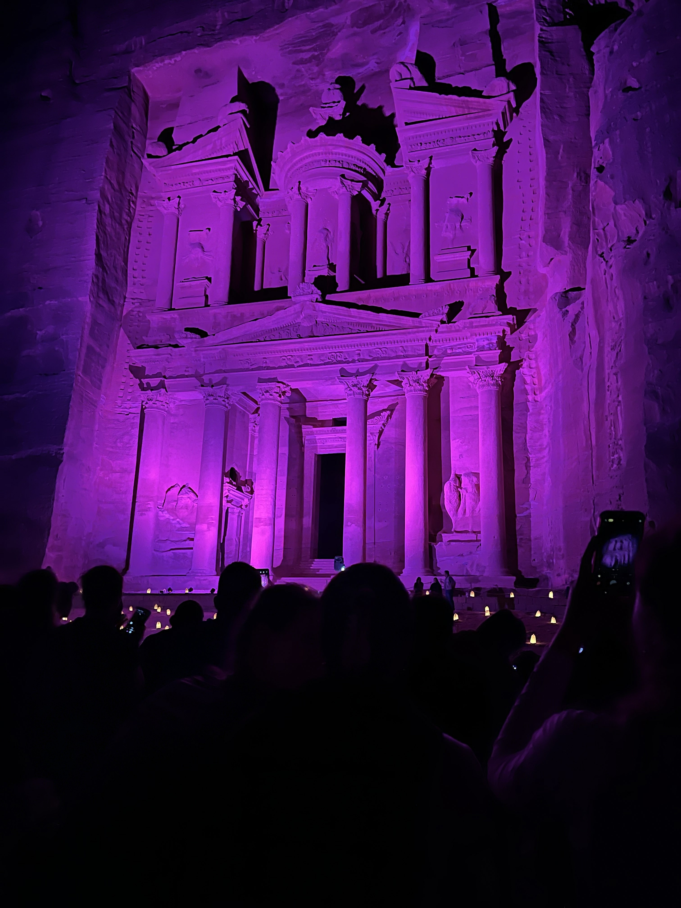
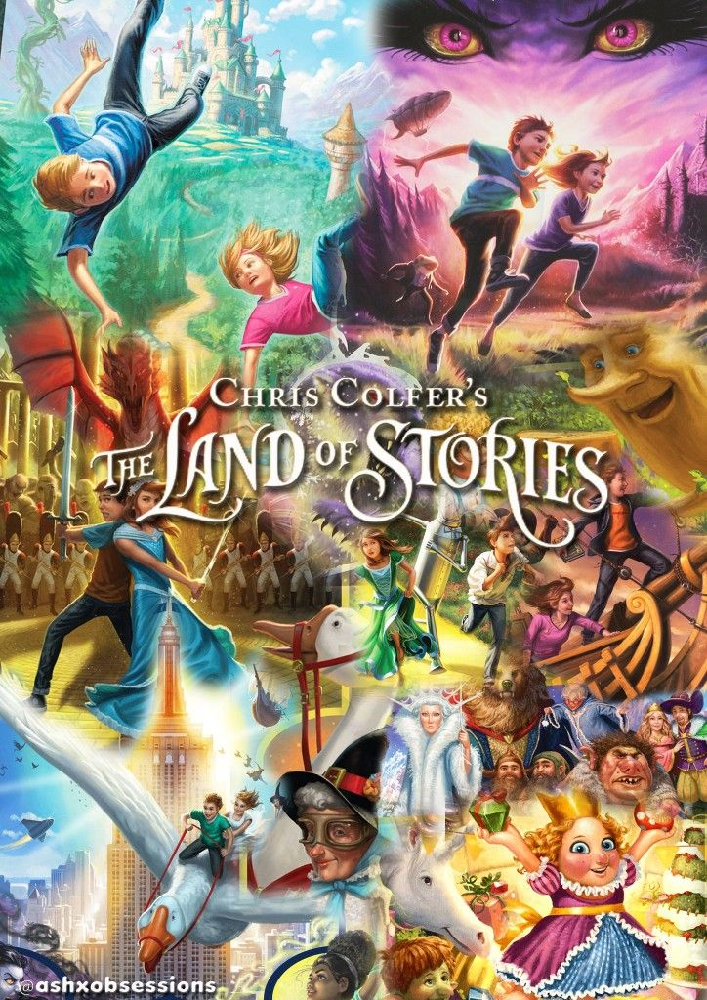
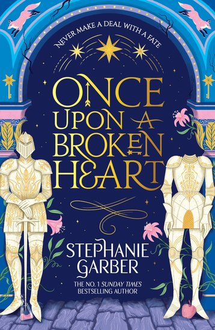
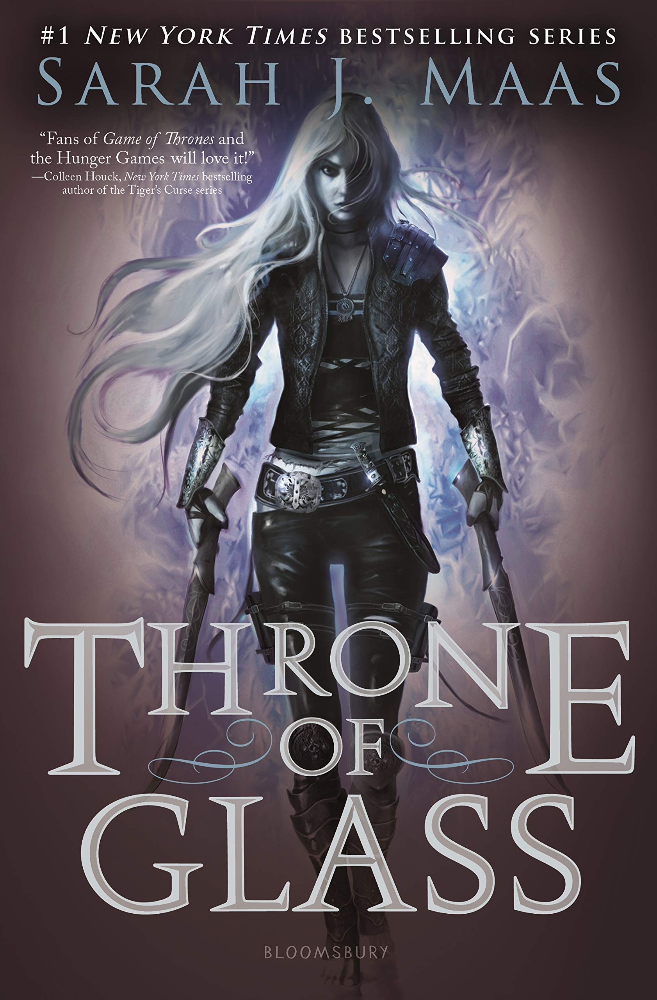

Who I Am
Learn more about me outside of school!
Cross Stitching
I enjoy cross stitching because it is a small but meaningful way to connect with my culture. In Arabic, we refer to cross stitching as Tatreez, which can look very different depending on where each piece was crafted. Different cities have their own patterns and designs, telling the story of the maker's life and connection to the land through an illustrative medium of colorful stitched motifs. Tatreez is most often seen on women's clothing called thobes, which can be decorated with symbols of history, memory, and home. The first and last images are pieces I Tatreezed myself, and the image in the middle shows an example of a thobe with Tatreez on it!



Traveling
For as long as I can remember, I've loved traveling to new places and interacting with different cultures. Some of my favorite places to visit are Jordan, Mexico, the Dominican Republic, and, most of all, Wisconsin Dells. My family and I went to the Dells every year while I was growing up, so it is part of some of my favorite memories!



Reading
Whenever I have some time to spare, I love to sit down with my Kindle and spend time reading new books. I particularly enjoy reading fantasy books that allow me to immerse myself in their worlds! Sometimes, I like to switch up what I'm reading by revisiting some of my favorite childhood books, such as The Land of Stories. It's a nice way to get away from screens and social media by giving myself something more productive to work on.


